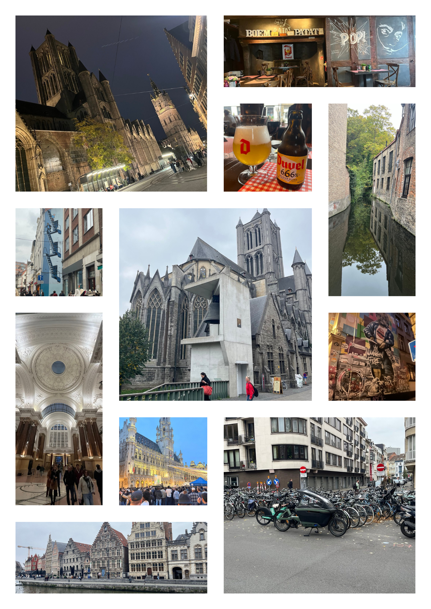

Vuelve la montaña rusa
Han sido sólo 6 semanas, pero han dado para mucho. Cumpleaños de por medio, hace solo un par de semanas que hemos guardado los pantalones cortos y ya he cogido el primer resfriado de la temporada. Si la entrada al blog no llega en fechas, es que el trabajo, por momentos, me ha superado. Y es que, como dice el título, ha sido una auténtica montaña rusa.
Antes de entrar en harina, sé que algún día Marina y Andreu me leerán. Dejamos de lado al Aitor docente y friki para coger el rol de Aitor padre. En parte estas entradas son tanto para vosotros como para mí. Además de que os quiero con locura, quiero que sepáis que estoy muy orgulloso de las personas en las que os estáis convirtiendo. Marina, no te autoexijas tanto, que eres un amor de persona. Y Andreu, me encanta cómo tu personalidad se traslada a la pista de basket y luego en clase.
Docencia¶
Bases de Datos¶
En Bases de Datos todo sigue fluyendo. Este curso estoy enfocando todo el trabajo del alumnado para hacerlo en el aula. Y cuando digo todo, es todo. Ni una actividad para casa, ya que la IA es una perversa aliada del alumnado perezoso y entiendo que es tan importante inculcar el hábito de estudio como el de trabajo en el aula.
En contraposición al curso pasado, estoy pidiendo menos actividades evaluables. Normalmente, actividad que hacíamos en clase, les hacía subirlas a Aules y luego las tenía que corregir yo en casa. No me da la vida. No puede ser que un módulo de 5h me suponga 10h más semanales, entre correcciones y preparación de materiales/clases. De los tres días que tenemos clase, intento hacer actividades evaluables en dos.
Dicho estoy, esta semana hice la prueba objetiva (¿ya no se puede decir examen?) de las unidades 2 a 4, es decir, el modelo EER y su transformación al modelo relacional. Le he dicho al alumnado que aprobará el 85%... ¿me equivocaré? De momento, unas tres horas para preparar la rúbrica y 35 minutos para corregir el primer examen. El resto de exámenes espero ir mucho más rápido.
Antes de dejar las bases de datos, quiero destacar una actividad que hice el jueves pasado. Durante el verano, cuando estuve meditando y leyendo sobre las BBDD, se me ocurrió que sería una buena idea que el alumnado intentase un proceso de ingeniería inversa para crear una base de datos. Y de ahí nació la actividad PR418 Ticket de la compra, cuya idea principal es diseñar la base de datos que hay por debajo de ticket de Decathlon. Planteé la actividad en clase en parejas, con compañeros que no se sientan juntos, y durante 45 minutos, estuvieron debatiendo, compartiendo planteamiento y ofreciendo una solución. La semana que viene haremos la puesta en común, pero la sensación, tanto mía como sus caras, fue muy buena.
IABD¶
Curso empezado, y sesiones de Lara de los viernes en marcha. En IABD, de lunes a jueves nos centramos en las herramientas y competencias asociadas al perfil profesional del curso de especialización, y los viernes nos centramos en aplicarlos a los proyectos de integración.
Por ejemplo, durante este mes, entre semana el alumnado ha aprendido los conceptos básicos de Big Data e IA, lo estrictamente necesario de Python, cómo se realiza un EDA y están conociendo la plataforma Hugging Face y todo lo que ofrece.
Durante los 5 viernes que hemos hecho el PIIAFP Lara (viaje y festivo aparte), por un lado conocimos el proyecto y sus objetivos, para luego montar en local el entorno de trabajo de la aplicación de captura de audios (desarrollada en Flask y MongoDB). En otra sesión fomentamos el trabajo en equipo y la colaboración mediante diversas dinámicas grupales y la integración de pequeñas funcionalidades en ramas (feature y fix). Luego, cada equipo tuvo que realizar una pequeña aportación a la aplicación, integrándolo con lo que realizaron sus compañeros. Finalmente, tras dejar a un lado la aplicación de captura, hemos empezado a trabajar con los datos que tenemos, realizando un EDA para conocerlos mejor, y poder definir un objetivo para crear un dataset sobre el cual reentrenar Whisper.
Los próximos pasos, creación del dataset, entrenamiento básico con dicho dataset y prueba del modelo mediante un prototipo creado en Gradio. Es decir, antes de navidad queremos que conozcan todo el ciclo de un proyecto de IA aplicado al reconocimiento de voz, para luego, en la segunda parte del curso, profundizar en los aspectos técnicos y mejorar el modelo.
PIIAFP Lara¶
La tercera semana estuvimos en Mérida en la reunión de kickoff del proyecto PIIAFP Lara de este curso. La verdad es que fue una experiencia muy enriquecedora, presentando el proyecto a las entidades locales de la mano del IES Albarregas y su gran equipo docente, así como las y los compañeros del IES Gran Vía de Alicante y el IES Polígono Sur de Sevilla. Aprovechamos para recibir una formación sobre la gestión de repositorios en GitHub, con el objetivo de definir un flujo de trabajo entre los diferentes IES, y organizar las tareas y responsabilidades de cada centro. Otros resultados de las jornadas fueron la definición de un protocolo para incorporar nuevas entidades y donantes de voz al proyecto (que en breve tendremos disponible en la propia web del proyecto), así como la definición de un entorno para el despliegue del modelo Lara.
Antes de dejar Lara, hemos propuesto el proyecto como experiencia TOTedu, de manera que si estás interesado, cuando esté publicado (eso esperamos), si sois docentes GVA, podréis venir al Severo Ochoa a conocerlo en profundidad.
La semana que viene tenemos reunión de coordinación, donde veremos qué hemos podido avanzar cada centro.
PIIAFP Hidrógeno Verde¶
El hidrógeno está parado. Pero la colmena avanza. Un par de semanas de reuniones con los compañeros de Villena y ya tenemos datos reales en InfluxDB.
Queremos replicar los datos también en MongoDB para comparar el rendimiento de ambas bases de datos time series y ver cuál es más adecuada para el proyecto. Además, estamos trabajando en la creación de un dashboard en Grafana para visualizar los datos en tiempo real.
La semana que viene también tenemos reunión de coordinación.
Jornada CEFIRE Familia de Informática¶
El pasado 22 de octubre tuve la oportunidad de asistir a la Jornada CEFIRE de la Familia de Informática. Fuimos 5 compañeros del Severo Ochoa y allí nos encontramos con buenos conocidos de Crevillente y La Vila, y algún alicantino más (además de muchos y buenos valencianos).
La verdad es que estuvo muy bien, con ponencias interesantes y un buen ambiente para compartir experiencias. Algo ajeno a las ponencias fue el buen rollo que se respiraba entre los compañeros valencianos. Da la sensación de que, en parte, se conocen todos. Y eso me gusta. Hay que hacer piña. Y quizás necesitemos más de este tipo de jornadas para fomentar el contacto y la colaboración entre centros.
EOI¶
Entre festivos, el viaje a Mérida y el día que fuimos a VLC, he faltado más de lo que me gustaría. Dicho esto, me lo paso bien. Ya me he organizado, carpeta y libreta para apuntar el vocabulario. Antes de cada clase, repaso las últimas palabras y noto que voy aprendiendo mucho vocabulario nuevo. En el aula, la profesora fomenta mucho la participación y la expresión oral, y eso me gusta.
Lo malo, que para llevarlo bien, tal como me gustaría, debería dedicarle un par de horas al día en casa, y no me da la vida. Pero bueno, hacemos lo que podemos. La semana pasada hice una redacción (la primera del curso), y yo pensaba que estaba más oxidado, pero no ha ido mal. Una B. Algo así como un 7.5. Ni tan mal.
No todo es trabajar¶
Creo que cada vez le dedico más letras a esta sección que a la docente, y en parte, me alegro.
Salud¶
Ahí voy, mejorando lentamente. El hombre sigue doliendo, pero menos. Cosas positivas, el gimnasio. Lo digo con la boca pequeña por lo que pueda pasar, pero si no sucede nada raro, continuaré yendo hasta verano. Después ya veremos. Este último mes casi no he perdido peso, pero es que he comido mucho y muy bien (es lo que tiene viajar).
Gimnasio bien, fisio regular. Lo positivo del gimnasio es que noto una mejoría en todo el cuerpo, pero el fisio va muy poco a poco. Lo necesito para desbloquear el hombro. El problema es el tiempo que tengo que invertir, que tengo tantas cosas que quiero hacer, que siento que me resta tiempo para otras actividades. Pero bueno, ya queda menos.
De la bici, diría que apenas he salido un dia en todo el mes y medio. Un día probé a correr, y normal. Por la tarde, un poco de dolor de rodilla, pero soportable.
Y bueno, llevo algo más de una semana con un catarro importante. Dolor de cabeza, mocos y tos. Lo típico de esta época. Espero que no se alargue mucho.
Viajes¶
Creo que ha sido el mes, en mucho tiempo, que más tiempo he estado fuera de casa.
El puente de la Comunidad Valenciana, como ya comenté, nos fuimos a Bélgica. La verdad es que muy bien. Mucho caminar, mucha cerveza y mucho chocolate. Visitamos Bruselas, Gante y Brujas. Nos gustó mucho Gante, con su mezcla de ciudad universitaria, historia y modernidad. Y bicicletas. Muchas bicicletas. Y Brujas, pese a ser un poco más turística, tiene un encanto especial. Bruselas me pareció una ciudad más gris, pero la Gran Place es espectacular. Os dejo algunas fotos del viaje.

También, dentro del viaje a Mérida con Lara, aprovechamos para, a la ida, pasar por Cáceres y visitar el casco antiguo, donde se grabaron algunas escenas de Juego de Tronos. Luego en Mérida, el último día, también pudimos visitar un poco la ciudad. La verdad es que me gustó mucho, con un casco antiguo muy bien cuidado y con mucha historia. El teatro romano es impresionante. Y de la comida, si digo que es mejor que el teatro romano, igual me quedo corto. La pena es que está muy lejos de Elche, pero tendré que hacer un esfuerzo y volver con la familia. Antes de dejar Mérida, los compañeros del proyecto son geniales, pero el equipo que hemos hecho en IABD es All-Star. ¡Qué fácil lo hacen todo y qué bien nos los pasamos!
Por último, un domingo estuvimos de jornada de senderismo con los amigos en el Barranc de l'Infern, donde terminamos comiendo una fideuà de jabalí que no la puedo recomendar lo suficiente (bueno, sí, si podéis, id a probarla a El Paraíso).
Ocio digital¶
En cuanto a la lectura, sí, he bajado el ritmo pero no la he abandonado. Este mes terminé La biblioteca de la Medianoche que, aunque por momentos sea casi un libro de autoayuda, me ha gustado. Sigo picoteando el Diario para estoicos: 366 reflexiones sobre la sabiduría, la perseverancia y el arte de vivir y un poco menos de El sutil arte de que (casi todo) te importe una mierda.
La novela que he empezado es Todos en mi familia todos han matado a alguien, de Benjamin Stevenson. La escuché recomendar en algún podcast y me llamó la atención. Llevaré una cuarta parte, y de momento me está gustando. Una novela negra con toques de humor.
Ahora sí, en cuanto al ocio digital, para hacerlo más conciso y en forma de lista, lo más recomendable:
-
Cine: Ni mucho ni poco. Algunas pelis que no me están mal: Laberinto en llamas (Apple TV), mitad peli catastrófica, mitad drama familiar; The Materialists (Movistar+) parece una historia de amor, pero quizás sea más una historia sobre el fracaso o el hedonismo; Invasión-Insurrección (Netflix) es una historia de amistad y venganza con samuráis ¿coreanos?/japonenses; The host otra peli catastrófica de un monstruo que aparece por unos vertidos en Seúl; Un fantasma en la batalla (Netflix), otra vuelta de tuerca a una poli que se infiltra en ETA. Pero sobre todas, quiero destacar Una casa llena de dinamita (Netflix), la nueva peli de Kathryn Bigelou, donde en tres actos, plantea que algún día, puede que todo salte por lo aires.
-
Series: como últimamente, poco. Terminé Stranger Things T4 (Netflix), por fin. Bien, enganchado again y listo para la temporada final. Luego devoré La diplomática T3 (Netflix), que se la recomiendo a todo el mundo. Y por último, he empezado en VO Dept Q (Netflix) que también me está gustando mucho... una desaparición, un inspector jodido, etc.... Con mi señorísima hemos visto (y nos hemos reído mucho con) la segunda temporada de Platónico y con Andreu de vez en cuando vemos un capítulo de Poker Face, que siempre nos deja buen sabor de boca, intentando adivinar como la prota acaba apareciendo en el capítulo.
-
Videojuegos: Este mes he jugado menos. Mal. Sigo a ratos con Rise of the Ronin (PS5) y estoy a punto de acabar Keeper (y esto que dicen que dura apenas 4-5 horas). Como buenos arcades, algunas sesiones tanto a Wheel World (Xbox), al Vampire-Survivors-like Deep Rock Galactic: Survivor (Xbox), el nuevo fenómeno Ball x Pitt, y con la nueva actualización, un par de días me enganché de nuevo a Vampire-Survivors.
Os dejo con un resumen gráfico de las portadas de las pelis... Se lo he pasado a ChatGPT y aunque no es ninguno de los actores y actrices (entiendo que por derechos de autor), se parecen a las buenas :)
Lo que está por venir¶
Evaluaciones. Ese es el futuro inmediato. También comenzar el bloque de NoSQL en IABD, y en Base de Datos, el diseño físico (DDL + DML). Tengo algunas ideas para apuntes nuevos de SQL con PostgreSQL, sobre todo aquellas extensiones SQL menos conocidas.
Intentaré volver antes de las vacaciones de Navidad para cerrar el trimestre, y escribir una entrada final de año.
Nos leemos en breve.